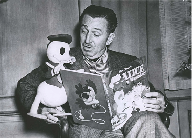

Walt Disney era un produttore, animatore e un disegnatore. Lui fondo i Walt disney animation studios.
I Nine old men erano i nove leggendari animatori della walt disney animation studios.
Chi erano le persone che trasformarono i nostri sogni in realtà?
Walt Disney era un produttore, animatore e un disegnatore. Lui fondo i Walt disney animation studios.
I Nine old men erano i nove leggendari animatori della walt disney animation studios.